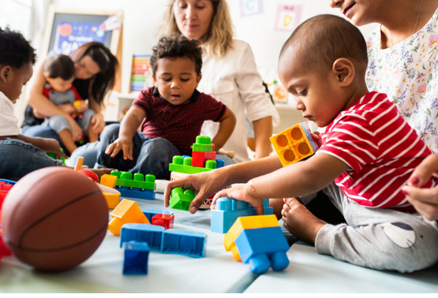

Economic contexts in early childhood education encompass issues such as poverty, housing stress, and financial hardship, which significantly influence family stability and children’s development. In Australia, approximately one in six children live in households experiencing financial disadvantage, which can restrict access to educational opportunities, nutritious food, stable housing, and health services (Australian Institute of Health and Welfare, 2022). Economic hardship is not static; it varies across regions, communities, and family structures, often intersecting with social and cultural factors.
From a sociological perspective, Bronfenbrenner’s Ecological Systems Theory provides a useful framework for understanding how economic stressors affect children across multiple layers, including family (microsystem), community (mesosystem), and societal policies (macrosystem) (Bronfenbrenner, 1979). Economic disadvantage is dynamic and diverse, affecting single-parent families, culturally and linguistically diverse households, and families living in rural or remote areas differently. Early childhood educators must recognize these variations to provide equitable and responsive support (Levitas, 2005).
Economic hardship can profoundly influence children’s cognitive, emotional, and social development. Limited financial resources may reduce access to quality early childhood education programs, educational materials, and extracurricular activities, potentially impacting learning outcomes. Stress associated with financial instability can increase parental anxiety and mental health concerns, which may affect parent-child interactions and attachment quality (Australian Institute of Health and Welfare, 2022).
For families, economic stress may lead to overcrowded housing, food insecurity, and restricted access to healthcare, creating barriers to positive family functioning. Children may exhibit behavioural issues, social withdrawal, or difficulty regulating emotions, which can further challenge early childhood educators in supporting inclusive and supportive learning environments. Educators need to consider these implications in curriculum planning, classroom management, and family engagement strategies.
Australian social policy addresses economic disadvantage through a combination of national and state-level initiatives. Key policies include:
Early childhood educators can implement the following evidence-based strategies to support children and families experiencing economic hardship:
Effective partnerships enhance support for children and families facing economic hardship. Key organisations include: